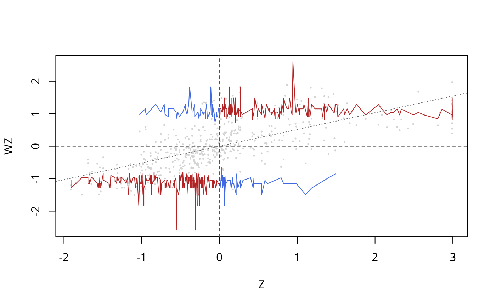

moran.plot.seismogram.RdA variant of the Moran scatterplot (see moran.plot) supplemented by lines connecting location-wise critical values. The plot allows for visual inspection of potential spatial weights misspecifiation.
moran.plot.seismogram(x, listw, locmoran, cv = 2.58,
plain = FALSE, zero.policy = FALSE, xlab = NULL,
ylab = NULL, plot = TRUE, return_df = TRUE, spChk = NULL)a numerical vector holding the attribute of interest
a listw spatial weights object
a fitted object of type localmoran
default 2.58; the desired critical value assuming approximate normality of standardised local Moran's I values
default FALSE; a plain Moran scatterplot is displayed if TRUE
default NULL; use global option value; if FALSE stop with error for any empty neighbour sets, if TRUE permit the weights list to be formed with zero-length weights vectors
label for x axis
label for y axis
default TRUE; if FALSE, plotting is suppressed
default TRUE; invisibly return a data.frame object, if FALSE do not return anything
should the data vector names be checked against the spatial objects for identity integrity, TRUE, or FALSE, default NULL to use get.spChkOption()
The Moran seismogram is a version of the Moran scatterplot that is complemented by lines connecting the location-specific critical values of local Moran's I. Lines in quadrants with positive spatial autocorrelation are shown in red and lines in quadrants with negative spatial autocorrelation are shown in blue. The representation is similar to a seismogram for detecting earthquakes and thus reveals potentially suspicious local spatial weights configurations by visualising spikes. The latter are displayed in an integrated manner with their positions in the attribute value range and in connection with the types of the associated spatial patterns (by the quadrants of the scatterplot).
When return_df is TRUE, a data frame object with the following members is returned:
the standardised attribute values
the standardised spatially lagged attribute values
the y-coordinates of the critical values
Westerholt, R. (2024): Extending the Moran scatterplot by indications of critical values and p-values: introducing the Moran seismogram and the drop plot. Proceedings of the 32nd Annual GIS Research UK Conference (GISRUK), Leeds, UK. doi:10.5281/zenodo.10897792
# Boston example (CMEDV; owner-occupied housing in USD)
data(boston)
boston.tr <- sf::st_read(system.file("shapes/boston_tracts.shp", package="spData")[1])
#> Reading layer `boston_tracts' from data source
#> `/home/rsb/lib/r_libs/spData/shapes/boston_tracts.shp' using driver `ESRI Shapefile'
#> Simple feature collection with 506 features and 36 fields
#> Geometry type: POLYGON
#> Dimension: XY
#> Bounding box: xmin: -71.52311 ymin: 42.00305 xmax: -70.63823 ymax: 42.67307
#> Geodetic CRS: NAD27
boston.nb <- poly2nb(boston.tr)
boston.listw <- nb2listw(boston.nb)
moran.plot.seismogram(boston.c$CMEDV, boston.listw, localmoran(boston.c$CMEDV, boston.listw), 2.58,
zero.policy = TRUE, plain = FALSE, plot = TRUE)
